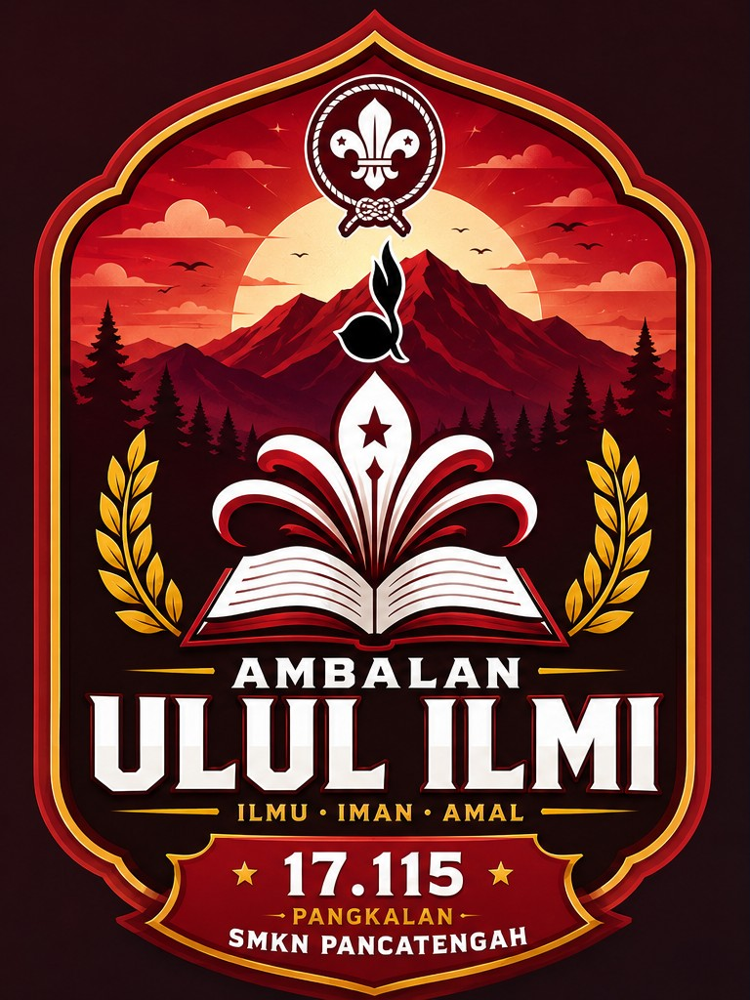
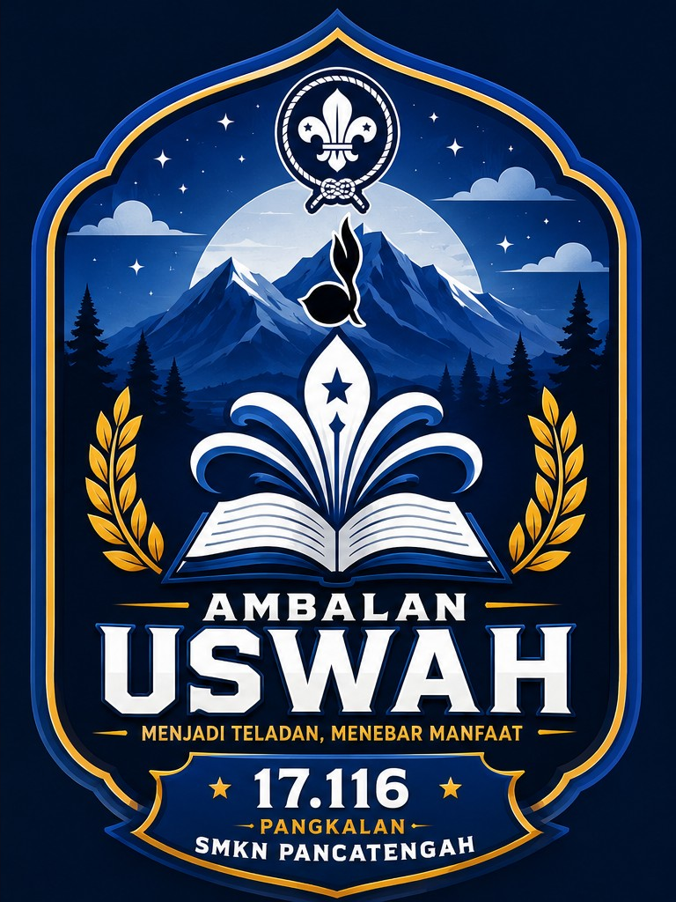

Latihan Rutin
Materi kepramukaan, PBB, pioneering, kepemimpinan, dan keterampilan lainnya.
Ambalan Ulul Ilmi - Uswah menjadi wadah untuk belajar kepemimpinan, kedisiplinan, kemandirian, persaudaraan, dan pengabdian.
Ulul Ilmi menggambarkan generasi yang berilmu dan terus belajar, sedangkan Uswah bermakna menjadi teladan dalam sikap, tindakan, dan pengabdian.


Bukan sekadar ekstrakurikuler, tetapi ruang untuk bertumbuh, belajar, dan berkarya bersama.
Ambalan Pramuka SMKN Pancatengah merupakan wadah pembinaan peserta didik melalui kegiatan kepramukaan. Anggota belajar bekerja sama, memimpin, bertanggung jawab, dan mengembangkan keterampilan.
Beberapa kegiatan utama yang dapat ditampilkan di website.
Materi kepramukaan, PBB, pioneering, kepemimpinan, dan keterampilan lainnya.
Pembinaan dan pengujian Syarat Kecakapan Umum (SKU) serta pendampingan anggota menuju Pramuka Garuda.
Proses pembinaan dan pengukuhan anggota melalui kegiatan yang terarah.
Musyawarah Ambalan dilaksanakan satu tahun sekali menjelang pergantian kepengurusan untuk mengevaluasi kegiatan dan memilih kepengurusan berikutnya.
Perkemahan Masa Tamu untuk siswa baru yang baru masuk ke SMKN Pancatengah sebagai pengenalan awal terhadap Pramuka dan Ambalan.
Kegiatan sosial, bakti lingkungan, dan aksi nyata untuk masyarakat.
Jadwal rutin dilaksanakan setiap minggu, dilengkapi dengan agenda pembinaan dan kegiatan tahunan Ambalan.
Ikuti kegiatan Ambalan Ulul Ilmi - Uswah bersama kami.